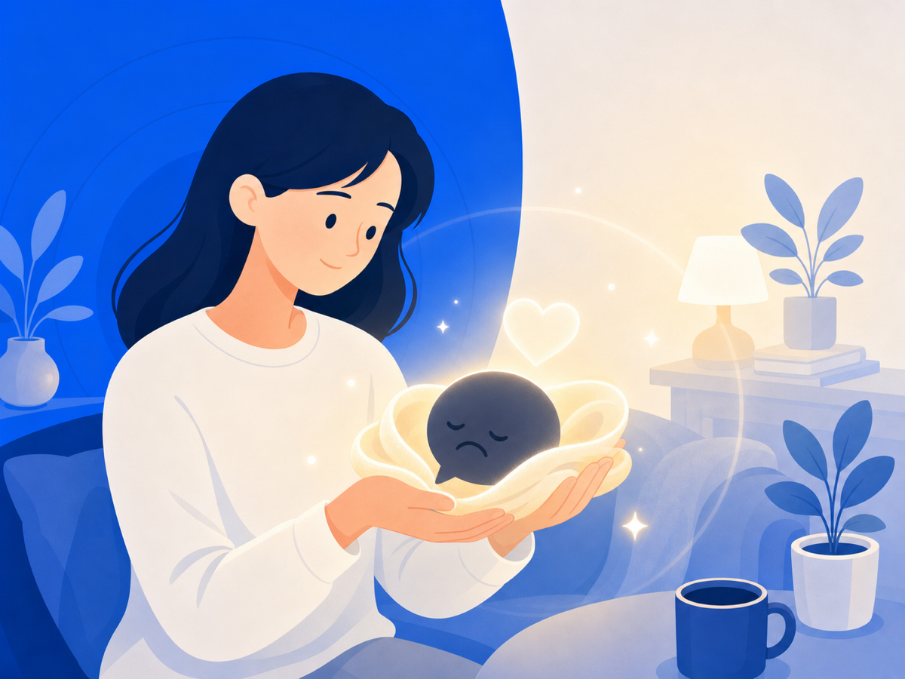

내 안의 목소리가 너무 가혹하다면 — 자기 자비 이야기


악플을 한 번 보고 나면 마음속에서 그 말이 계속 재생되죠. 처음엔 "저 사람이 왜 저러지"라고 생각하다가, 어느 순간 "내가 뭔가 잘못한 걸까"로 바뀌어 있을 때가 있어요. 남이 던진 말이 어느새 내 목소리가 돼 버리는 것 — 바로 이 순간이 가장 아파요.
왜 스스로를 더 세게 몰아붙이게 될까요
거울을 보며 "이러니까 욕먹지" 하고, 잠들기 전엔 "내가 그때 왜 그랬을까"를 수십 번 되감죠. 다친 친구한텐 절대 안 할 말을, 우리는 자신한테는 너무 쉽게 해요.
심리학자 크리스틴 네프(Kristin Neff) 박사 연구에 따르면, 자기 자비(self-compassion)가 낮을수록 고통스러운 상황에서 스스로를 더 가혹하게 비판하는 경향이 있어요. 네프 박사는 자기 자비를 세 요소로 정의했어요.
1. 자기 친절(self-kindness): 실패하거나 상처받았을 때 스스로를 혹독하게 대하지 않고 따뜻하게 대하는 것. 2. 보편적 인간성(common humanity): 고통은 나만 겪는 특별히 비참한 일이 아니라, 누구나 살면서 만나는 인간의 조건이라는 인식. 3. 마음챙김(mindfulness): 고통스러운 감정을 억누르거나 과장하지 않고, 있는 그대로 균형 있게 바라보는 것.
관련 연구들에서는 자기 자비가 높은 사람들이 대체로 낮은 우울감·불안감, 높은 삶의 만족도와 관련되는 경향이 보고돼 왔어요. 다만 이것은 모든 사람에게 같은 방식으로 작동하는 처방이라기보다, 스스로를 덜 가혹하게 대하는 데 도움이 되는 심리적 태도에 가까워요.
자비 중심 치료가 보여주는 것
영국 심리학자 폴 길버트(Paul Gilbert)는 자비 중심 치료(CFT, Compassion Focused Therapy)를 개발했어요. 그는 인간의 감정 조절 시스템을 위협 시스템, 추구 시스템, 안정·위로 시스템 세 가지로 설명해요. 악플 같은 반복적인 위협 자극은 위협 시스템을 과잉 활성화해서 — 뇌의 화재경보기가 계속 울리는 상태 — 안정 시스템이 작동하기 어렵게 만든다고 해요.
2015년 14개 연구를 모은 체계적 고찰(PMC)에서는 자기비판이 강한 사람일수록 자비 중심 훈련을 통해 우울 감소와 자기 자비 증가를 더 뚜렷하게 경험했다는 결과가 나왔어요.
자기비판은 동기 부여가 안 돼요
"나를 채찍질해야 더 잘할 수 있다"고 믿는 분이 많아요. 그런데 연구 결과는 반대예요. 로체스터대 의료센터 자료에 따르면 자기 자비가 높은 사람은 낙관성·감사·자기 주도 동기가 더 강하게 나타났어요. 자신을 친한 친구처럼 대할 때, 실패에서 배우는 능력과 동기가 오히려 높아지는 거예요.
자기 자비는 자기 자랑이 아니에요. 나를 봐주는 것이에요.
오늘 한 마디만
고통스러운 말을 반복해서 마주치지 않는 환경을 만드는 것, 그게 가장 작은 시작이에요. 위협 시스템의 화재경보기가 계속 울리는 한, 마음이 쉬기가 어려워요.
그리고 오늘, 자신에게 친한 친구에게 하듯 한 마디 건네보세요. "힘들었겠다. 잘 버텼어."
이 글은 일반 정보예요. 구체적인 일은 전문가(상담·변호사)와 상의하세요. 많이 힘들 땐 자살예방상담 109(24시간)가 있어요.
참고 자료
- Kristin Neff — What is Self-Compassion?
- Self-Compassion: Theory, Method, Research, and Intervention, Kristin Neff
- Psychotherapeutic benefits of compassion-focused therapy: an early systematic review (PMC, 2015)
- URMC Behavioral Health Partners: Self-Compassion — Improve Your Well-Being and Quiet Your Inner Critic (2023)